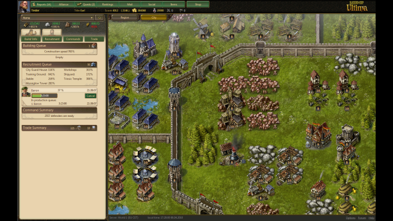

Apps Dissected
APIs as Awesome Sauce
Harald "digitarald" Kirschner, @digitarald & harald@mozilla.com
Who discovered a new HTML5 API at MozCamp?
Apps and Me!
Partner Engineer, Labs Scientist, Web Craftsman
... Neonomade, Cook, Musician, Expecting Father
Is a Website a Web App?
Is a Bookmark a Web App?
What makes a Web App
- Deep Platform Integration
- Distribution and Discovery Model
- Implicit Storage capacities
- Implicit API permissions
The Web is the Platform
... and it gives you plenty of access if you ask for it in the right way.
Types of Apps
- Web Content: Not really an app.
- Hosted Web Apps: Get implicit storage APIs and Permissions described in manifest.
- Packaged Web App: Content Security Policy (CSP) and Code Reviews
- Privileged Packaged Apps: Equivalent in capability/security to other mobile apps.
Your Mission (should you accept ...)
- Think of an App
- Take as many APIs (as possible)
- Present and discuss it!
- Hack it!
Here be Code!
- Always check documentation for correct prefixes!
- Some semicolons might be missing as well!
Open Web Apps
Install and verify app installations.
// TODO: Check proper error
var request = navigator.mozApps.getSelf();
request.onsuccess = function() {
console.log(request.result.receipt);
});
request.onerror = function() {
// Install if app is not installed
if (!request.result) {
navigator.mozApps.install('http://www.mine.com/manifest.webapp');
}
}- Use: Detect app installation on landing page. Marketplace receipt validation.
- Gotchas: The app object in the
request.resultis only available within the app.
In-App Payments
Prompt for payments and verify receipts.
let request = navigator.mozPay([signedJWT1, signedJWTn]);
request.onsuccess = function () {
// A signed JWT got posted back to the server
}
request.onerror = function () {
// User cancelled or something went wrong
}- JWT: Signed JSON Web Token using server-side code.
Page Visibility
Detect if the window/tab is visible or hidden.
document.addEventListener('visibilitychange', function() {
if (document.hidden) {
myVideo.pause();
} else {
myVideo.play();
}
}, false);- Use: Stop Slideshows. Control Live Streams.
- Gotchas:
requestAnimationFramealready stops being called when a tab hides. Audio and Video don't.
Canvas
2D pixel-manipulation, now hardware-accelerated.
var canvas = document.getElementById('tutorial');
var ctx = canvas.getContext('2d');
ctx.fillStyle = 'rgb(200,0,0)';
ctx.fillRect (10, 10, 55, 50);
ctx.fillStyle = 'rgba(0, 0, 200, 0.5)';
ctx.fillRect (30, 30, 55, 50);- Tips: Mix and match freely with all the other APIs.
- Reference: For doing interactve visualizations, SVG might be a viable alternative.
Games!
WebGL
OpenGL goes web, the 3D context for canvas.
- Tips: New to OpenGL? Use a library, they abstract all the hard stuff!
- Works in unison with
FullscreenandPointer Lock.
Banana Bread (Emscripten)

HexGL (Three.js)
Audio
Load, play and remix Audio data.
// Load dynamically
var audio = new Audio();
audio.src = 'song.ogg';
audio.addEventListener('audioAvailable', function() {
audio.play();
}, false);- Tip:
MP3is available on Firefox OS and Android.
Tone Generation
// Create new instance
var output = new Audio();
output.setup(1, 44100);
// Write samples using a JS Array
var samples = [0.242, 0.127, 0.0, -0.058, -0.242, ...];
output.writeAudio(samples);
// Tone generation: Pulsing audio
samples = new Float32Array(22050);
for (var i = 0; i < samples.length ; i++) {
samples[i] = Math.sin( i / 20 );
}
output.writeAudio(samples);
Methods and events should be prefixed with moz.
WebRTC: getUserMedia
Record and process audio and video streams.
var video = document.getElementById('my-video');
navigator.getUserMedia({'video': true}, function(mediaStream) {
video.src = URL.createObjectURL(mediaStream);
video.play();
}, function(error) {
console.error('Video capture error: ', error.code);
});
// Capture
var ctx = myCanvas.getContext('2d');
ctx.drawImage(video, 0, 0);- Options:
video,audioand (non-standard, FF-only)picturefor taking snapshots.
Taking Snapshots
requestAnimationFrame
Paints synchronized to the refresh rate of the screen, resulting in the most high-fidelity animations.
var lastTime = null;
var tick = function(now) {
now = Date.now()
if (lastTime) myGameUpdate(now - lastTime); // ms since last tick
lastTime = now;
requestAnimationFrame(tick);
};
requestAnimationFrame(tick);- Gotchas: Tricky API (callback must call rFA again). Automatically paused for unfocussed tabs.
- Tricks: Provide your canvas as first argument for internal browser optimization.
Performance.now
High-resolution measurement (floating point instead since page was opened).
// Performance timer with sub-millisecond resolution
var lastTime = null;
var tick = function(now) {
now = (now && now > 1e12) ? now : Date.now()
if (lastTime) myGameUpdate(now - lastTime); // ms since last tick
lastTime = now;
requestAnimationFrame(tick);
};
requestAnimationFrame(tick);- Use: Physics simulations or animations benefit from exact timers.
Fullscreen
Open page or one element in full screen.
// Fullscreen on whole document
document.requestFullScreen();
// Fullscreen on one element
document.getElementById('my-game-canvas').requestFullScreen();
- Gotchas: Has to be immediate to an user action. Keys are disabled (Risk of phishing).
- Tricks: Control page behaviour with pseudo Tags (
:fullscreen,:-moz-full-screen) in CSS and with Events.
Pointer Lock
Locks mouse to page for free movement, disabling cursor and window boundaries.
if (document.fullScreenEnabled) {
navigator.pointer.lock(document.body, function() {
console.log('Pointer lock worked!');
}, function() {
console.error('No pointer lock, fall back');
};
}
document.addEventListener('mousemove', function(e) {
console.log('Mouse moved by x: %d and y: %d px',
e.movementX || 0,
e.movementY || 0
);
}, false);Screen Orientation (& Lock)
Read the screen orientation state, to be informed when this state changes and to be able to lock the screen orientation to a specific state.
if (window.screen.lockOrientation('landscape-primary')) {
console.log('orientation was locked');
}
}- Gotchas: Only works in unison with fullscreen state.
- Tricks: Fix your
orientationin themanifest.webapp.
DeviceOrientation & DeviceMotion
Access accelerometers, gyroscopes and compasses.
window.addEventListener('deviceorientation',function(event){
// left-to-right tilt in degrees, where right is positive
var tiltLR = event.gamma;
// front-to-back tilt in degrees, where front is positive
var tiltFB = event.beta;
// compass direction the device is facing in degrees
var dir = event.alpha
// call our orientation event handler
rotateMyStuff(tiltLR, tiltFB, dir);
}, false);- Gotchas: Track screen orientation to normalize values.
- Use: Gyroscope controlled games. Augmented reality!
Watch it Live
Battery
Read and track battery levels and charging state.
var battery = navigator.battery;
console.log('Battery charging: ', battery.charging); // true
console.log('Battery level: ', battery.level); // 0.58
console.log('Battery discharging time: ', battery.dischargingTime);
// Listen to change events
battery.addEventListener('chargingchange', function(e) {
console.warn('Battery charge change: ', battery.charging);
}, false);- Use: Warn games when battery is low. Prompt users to do intense processing only when plugged in.
Works on all Platforms!
Geo Location
Track users location and movement.
navigator.geolocation.getCurrentPosition(function(position) {
var coords = position.coords;
myMapUpdate(
coords.latitude, coords.longitude, // (decimal degrees)
coords.altitude, // (meters)
coords.heading, // (degrees clockwise from true north)
coords.speed // (meters/second)
);
}, function(error) {
if (error.code == 1) { // Permission denied
myGracefulFallback();
}
}, {maximumAge: 75000});- Gotchas: Drains battery.
- Use: Location based services.
Options
enableHighAccuracy: default false, true might be slowertimeout: millisecondsmaximumAge: milliseconds
Ambient Light
Detect light intensity around the device.
window.addEventListener('devicelight', function(vet) {
console.log('SI lux', evt.value);
}, true);- Gotchas: Activated/deactivated when event is added/removed.
- Use: Night/Day mode.
Proximity Sensor
Detect if the device screen is covered (while calling).
window.addEventListener('userproximity', function(evt) {
console.log(evt.near ? 'Hello' : 'Come closer!');
}, true);- Gotchas: Activated/deactivated when event is added/removed.
- Use: Pause app when user holds the phone to her ear.
Vibration
Uhm, vibrate!
// Single vibration
navigator.mozVibrate(200);
// Pattern
navigator.mozVibrate([200, 100, 200, 100, 400]);
// Cancel existing vibrations
navigator.mozVibrate(0);Contacts
Read/write address book access.
var record = {givenName: 'Harald', familyName: 'Kirschner'},
contact = new mozContact();
contact.init(record);
var request = navigator.mozContacts.save(contact);
request.onsuccess = function() {
// .result is mozContact with id
console.log('Saved contact #' + request.result.id);
};
request.onerror = function(error) {
console.error('Could not save contact: ' + error);
};Find contacts
var request = navigator.mozContacts.find({});
request.onsuccess = function () {
console.log(request.result.length + ' mozContacts');
listMyContacts(request.result);
}
// Alternative query:
// find({filterBy: ["id"], filterOp: "equals", filterValue: myId})Telephony
Dial out and mediate calls, i.e. answer, reject, hold or resume a call.
// First, obtain a telephony object.
var telephony = navigator.mozTelephony;
// Check if the speaker is enabled or phone is muted.
concole.log(telephony.speakerEnabled, telephony.muted);
// Then, we dial out.
var outgoing = telephony.dial(myPhoneNumber);
// Event handlers for the call.
outgoing.onconnected = function(event) {
/* Do something when the callee picks up the call. */
};
outgoing.ondisconnected = function(event) {
/* Do something when the call finishes. */
};Mediate Calls
// Receive an incoming call.
telephony.onincoming = function onincoming(event) {
var incoming = event.call;
if (incoming.number == myBlockedNumber) {
// Hang up
incoming.hangUp();
return;
}
// Answer the call.
incoming.answer();
};SMS
Send, receive and manage SMS messages.
var request = navigator.mozSms.send(myNumber, "Hello World!");
request.onsuccess = function() {
var message = request.result;
console.log(
message.delivery, // 'sent' or 'received'
message.read // boolean
);
}
request.onerror = function(error) {
console.error('Could not send message: ' + error);
}Web Activities
Launch and register delegated activities for your app.
- Basic activities will have simple names like
edit,view,pickorshare - Any application will be able to create new activities.
- The following examples are just snapshots to get an idea!
Launch an activity
// Launch an activity: Pick an image
var act = new Activity({
name: "pick",
data: { type: "image/png", multiple: false }
});
act.onsuccess = function() {
processMyImage(a.result);
});
act.onerror = function() {
alert("Oops: " + this.result.error.name);
});Declare registration in Webapp Manifest
// Declarative registration
"activities": {
"share": {
"filters": {
"type": ["image/png", "image/gif"]
},
"href": "foo.html",
"disposition": "window"
}
}Register to handle an activity
Pick a png image and return what the user had picked
var req = navigator.registerActivityHandler({
name: "pick",
disposition: "inline",
filters: { type: "image/png", "image/gif" },
returnValue: true
});
req.onerror = function() { alert("failed to register activity"); }
navigator.setMessageHandler('activity', function(act) {
showMyImageSelector(function(img) {
if (!image) {
act.postError("NoImage");
return;
}
act.postResult({ type: "image/png", url: image });
});
});Web Sockets
Full-duplex single socket connection over which messages can be sent between client and server.
var ws = new WebSocket('ws://echo.websocket.org/');
ws.onopen = function (evt) {
ws.send('Rock it with Websockets!');
};
ws.onmessage = function (evt) {
console.log('Got message: ' + evt.data);
};
ws.onclose = function(evt) {
console.log('Disconnected');
};- Tips: Persistent connection saves time/battery/bandwidth, especially on phones.
- Gotchas: Sometimes blocked by (badly configured) firewalls and proxies, so consider fallbacks.
- Use: Real-time! Games, collaboration, chats, analytics, behavioural tracking, etc.
EventSource - Server-sent Events
Method of continuously sending data from a server to the browser, rather than repeatedly requesting it.
var url = 'streams/events';
var eventSrc = new EventSource(url);
eventSrc.addEventListener('open', function (event) {
console.log(event.type + ': ' + event.data);
});
eventSrc.addEventListener('article', function (event) {
var article = JSON.parse(event.data);
console.log('New article: ' + article.title);
});- Tips: Persistent connection saves time/battery/bandwidth again, especially on phones. Supports CORS in FF.
Event stream format
event: message
data: Anything goes here
event: article
data: {"title":"New Stuff!","url": "http://…","time":138567945679}- Available fields:
event(for named events),data,idandretry. - MIME-type:
text/event-stream
Tweet to see things happen!
Push Notifications
Send small messages to users when the user is not on the site.
var push = navigator.push;
// Ask the user to allow notifications
var request = push.requestURL(waToken, publicKey);
request.onsuccess = function() {
var url = request.result.url;
// We got a new push URL, store it on the server.
jQuery.post('/my-push-urls/', {url: url});
};- waToken: Web App Token identifies uniquely the user (or installation) of the app.
- WAToken: Cryptographic key to verify the origin of the notification.
- App server posts JSON updates to the returned URL (TBD).
File, Blob and FileReader
Manipulating file objects in web applications client-side; also programmatically selecting them and accessing their data.
// Called in myFileInput.onchange or myForm.onsubmit
var file = myFileInput.files[0];
// Read in selected file
var reader = new FileReader();
reader.onload = function(evt) {
myPreview.title = file.name;
myPreview.src = evt.target.result;
// Or as style
var style = 'url(' + evt.target.result + ')';
myPreview.style.backgroundImage = style;
};
reader.readAsDataURL(file);- Tips: Mix and match File APIs with Canvas, Video, Audio and XHR2.
- Use: Image manipulation. File viewer. Dynamically generate downloads.
Demo: Image Drop
XMLHttpRequest2
Adds more functionality to AJAX requests like file uploads, transfer progress information and the ability to send form data.
var data = new FormData();
// Automatic string conversion for everything
data.append('username', 'digitarald');
data.append('accountnum', 123456);.
data.append('userfile', myFileInput.files[0]);
var req = new XMLHttpRequest();
req.open('POST', '/submit-form');
req.send(data);
// Alternative: From Element
var data = new FormData(myFormElement);- Use: Mash-ups with cross-origin data. Load, manipulate and save binary files.
Cross-Origin Resource Sharing (CORS)
HTTP header for public data:
Access-Control-Allow-Origin: *HTTP header for limited access:
Access-Control-Allow-Origin: http://www.website-requesting-data.comAjax as usual:
var xhr = new XMLHttpRequest();
xhr.open('GET', 'http://www.data-provider.com/public-data.json');
xhr.onload = function(e) {
var data = JSON.parse(this.response);
}
xhr.send();Web Workers
Running scripts in the background, isolated from the web page.
// my_task.js will run in its background threads
var worker = new Worker('my_task.js');
worker.addEventListener('message', function(event) {
console.log('Worker send a message back: ' + event.data);
}, false);
// Start the worker.
worker.postMessage(JSON.stringify(myWorkerData));- Gotchas: Worker has no DOM APIs, you can crunch data but can't draw canvas.
- Use: Image and other Binary Data Manipulation. Game Physics. Crunching Data.
Typed Arrays
JavaScript typed arrays provide a mechanism for accessing raw binary data much more efficiently.
// a buffer with 16 bytes
var buffer = new ArrayBuffer(16);
// a view treating the data as 32-bit signed integers
var int32View = new Int32Array(buffer);
// Access the fields in the array just like a normal array
for (var i=0; i < int32View.length; i++) {
int32View[i] = i*2;
}- Created for the WebGL, but also implemented for Audio, Video, WebSockets, Canvas and binary data manipulation.
- Gotchas: Optimized for reading and iterating, initialization can be slow (compared to
Array). - Use: For everything binary and super fast arrays.
Structured Cloning & Transferable Objects!
Makes Typed Arrays the fastest way to get data from and to Web Workers.
worker.postMessage = worker.webkitPostMessage || worker.postMessage;
var bigData = new ArrayBuffer(1);
// // New argument: postMessage(message, targetOrigin, transferables);
worker.postMessage({other: 'data', data: bigData}, [bigData]);
if (bigData.byteLength) {
console.error('Transferables are not supported in your browser!');
} else {
// Buffer got reset, transferables are supported.
}Device Storage
Read/write access for files in predefined directories (pictures, music, movies, etc).
var name = "my-cat-with-80s-camera-filter.png",
storage = navigator.getDeviceStorage("pictures"),
request = storage.addNamed(myImageBlob, name);
request.onsuccess = function() {
console.log('%d saved', this.result.name);
// storage.delete(name)
};
request.onerror = function() {
console.log('Could not save picture, #' + this.result.code);
};Offline
A symphony of multiple APIs.
... and easier for packaged apps.
Web Storage
Key-value storage for sessions or persistent.
sessionStorage.setItem('username', 'digitarald');
if (sessionStorage.getItem('username')) {
alert('Welcome ' + sessionStorage.setItem('username'));
}
// More data
localStorage.setItem('profile', JSON.stringify(profile));
// Reading JSON
var profile = JSON.parse(localStorage.getItem('profile'));
// On logout ...
localStorage.removeItem('profile');
// or
localStorage.clear();IndexedDB
Transaction-based Big Data for the browser.
- Gotchas: Callbacks may result in verbose code.
- Tips: Designed very versatile, also to be used as FileSystem alternative.
Offline Application Cache
TODO.
<html manifest="/offline.manifest">CACHE MANIFEST
# v1.3 16-11-1012
index.html
css/style.css
js/app.js
images/logo.png
NETWORK:
login-page
http://api.more-data.com- Gotchas: Use build scripts to update the cache during development.
- Tips: Add version number/date to force invalidation on manifest update.
Moving Targets
... developing with Web APIs
Prefixes
- Feature Detection
- Use Polyfills
- Use Shims
Prefixes
element.requestFullScreen =
element.requestFullScreen ||
element.mozRequestFullScreen ||
element.webkitRequestFullScreen;element.requestFullScreen(element.ALLOW_KEYBOARD_INPUT);You thought prefixes are bad?
- Good News: Prefixes are going
- Bad News: You thought prefixes are bad? To move/break even faster, WebRTC got version numbers!
webkitPeerConnection00
Moving Targets
... developing with Web APIs
Calls to Action
- ! .
Experiment!
Discover by doing.
Share!
Help the community by sharing your experience.
Scratch your own Itch!
Solving a problem you have might be as useful for others.